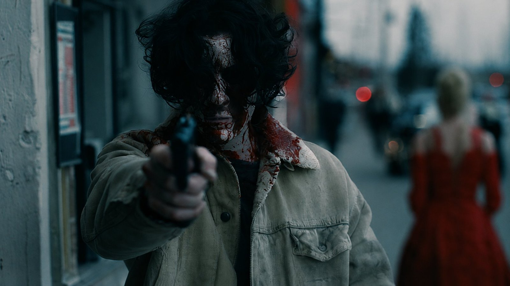
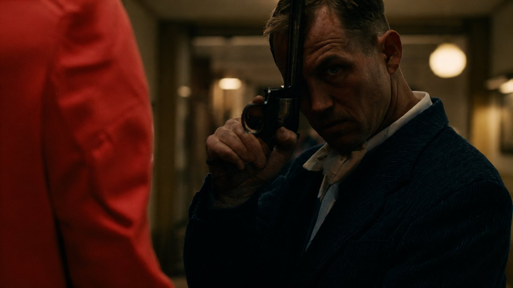
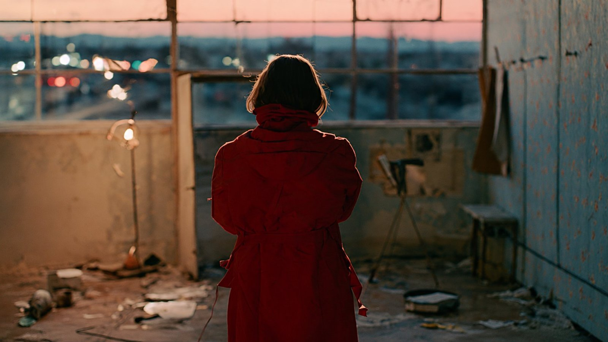

Four Frames, One Film
A Midjourney "quadriptych cinema still" generates four connected stills of red coats, snowy nights and gunfire, which GPT Image 2 then splits into separate HD frames. It reads like an unmade Nordic crime film.
| Creator | V @VictorInFocus |
|---|---|
| Platform | X |
| Model | Midjourney + GPT Image 2 |
| Likes | 393 |
| Posted | 2026-06-28 |
| Visual style | Cinematic realism |
| Regional vibe | European |
| Genre | Thriller / mystery |
| Mood | Tense / thrilling |
| Camera technique | Storyboard grid |
Prompt · from the author's reply
"Isolate each individual frame from the contact sheet, then recreate every frame as a separate high-resolution [aspect ratio e.g 16:9/21:9] image. Preserve the original composition, framing, lighting, colour palette, subject placement, atmosphere, and cinematic style exactly. Do not redesign, reinterpret, crop awkwardly, or introduce new details. Preserve the exact AESTHETIC, COLOUR PALETTE, LIGHTING, MOOD, SUBJECT DESIGN, and ENVIRONMENT from the source image. Each extracted frame should feel like a polished standalone film still at the highest possible resolution."